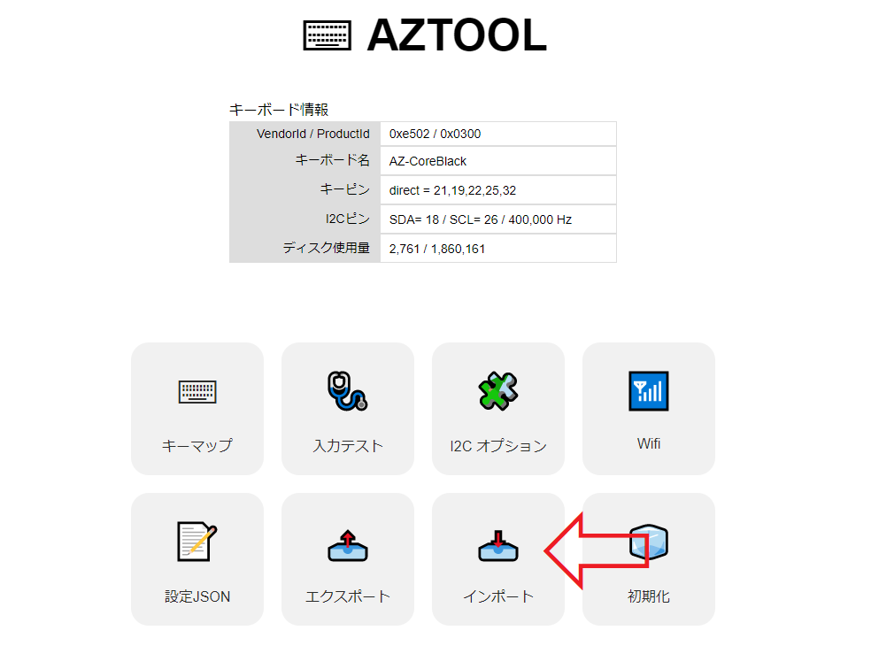
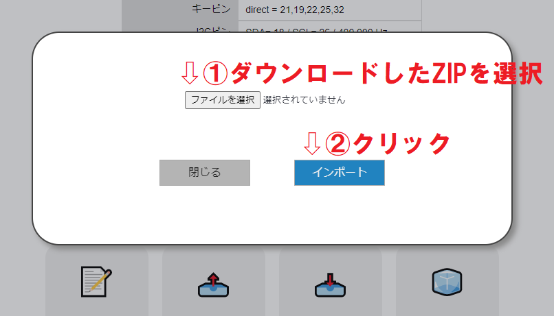

ZIPファイルのダウンロード
デフォルトのファームウェアはAZ-CORE(ホワイト)用の設定がされています。
その他のキーボードを使用する場合はAZTOOLから下記設定ファイルをインポートして下さい。
AZ-CORE ブラック 用設定ファイル
AZTOOLから設定のインポート
AZTOOL（下記ページ）からBluetooth接続したキーボードを選択してダウンロードしたZIPファイルをインポートして下さい。
AZTOOL


↑